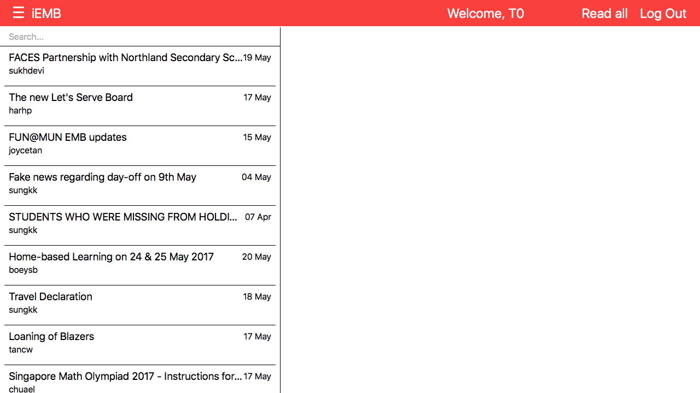
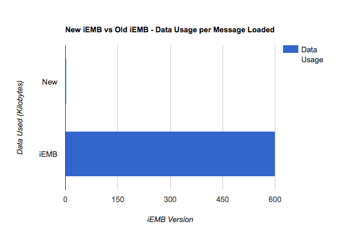
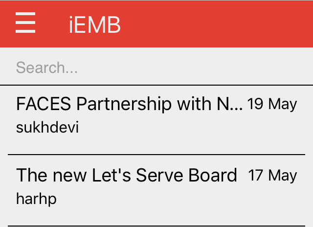

A better portal for students

The new iEMB is a huge step up from the default
It helps students' productivity, with its new side-panel for viewing messages, speeding things up
The page size is smaller, saving precious mobile data
The read all button helps students clear messages they don't need
It sports keyboard navigation, using the up/down arrows, so students need not reach for the mouse every time
We support better search, which is instant and relevant, searching for the title, poster, and date, all at the same time
Search can be run from anywhere, so students can search quickly and easily
You connect to our servers via HTTP/2.0* with HTTPS, and to the schools' with HTTP/1.1 with HTTPS**
Our code is open source, allowing more programmers to check the code and its' integrity
None of your data touches our servers in a manner we can read***
It helps students' productivity, with its new side-panel for viewing messages, speeding things up
The page size is smaller, saving precious mobile data
The read all button helps students clear messages they don't need
And it just plain looks better
Fast
The new iEMB uses a side panel, allowing for faster switchingIt sports keyboard navigation, using the up/down arrows, so students need not reach for the mouse every time
We support better search, which is instant and relevant, searching for the title, poster, and date, all at the same time
Search can be run from anywhere, so students can search quickly and easily
Data Saving
The new iEMB uses much less data then the old one
It uses less than 2KB per message on average, compared to almost 600 before

It uses less than 2KB per message on average, compared to almost 600 before
Responsive
The new iEMB works on mobile
It has a comprehensive and easy-to-use mobile experience
The old iEMB, however, is not responsive, requires zooming, and takes up a lot of data

It has a comprehensive and easy-to-use mobile experience
The old iEMB, however, is not responsive, requires zooming, and takes up a lot of data
Almost Secure
The new iEMB is as secure as it gets for a school portalYou connect to our servers via HTTP/2.0* with HTTPS, and to the schools' with HTTP/1.1 with HTTPS**
Our code is open source, allowing more programmers to check the code and its' integrity
None of your data touches our servers in a manner we can read***
If you're paranoid, you could always download it and run it yourself
* If supported by your browser, or else HTTP/1.1
** - We cannot verify your username and password through SSL/TLS, as the school does not support SFTP
*** - Usernames are hashed with SHA-512, passwords and other data are processed without logs
** - We cannot verify your username and password through SSL/TLS, as the school does not support SFTP
*** - Usernames are hashed with SHA-512, passwords and other data are processed without logs
Upcomming Projects
Apple/Material Design
- Based on browser user-agent
- Fits into the user's experience better
- More immersive
Offline mode
- Through service worker
- Download all button
- Offline reading of messages when needed
Faster loading
- Switch to Singaporean Servers
- Optimize Code
- Reduce cURL requests